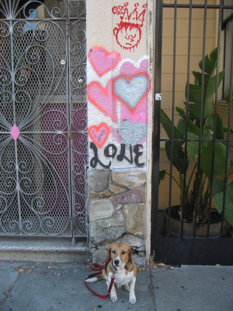

<--Previous Up Next-->

Love
On 20th Street near Florida. We stopped here after Nile's mural tour and beer at Atlas Cafe (where Huxley buried his salmon-skin bone in a planter). We met the woman who owns the building; the decoration is by her daughter's boyfriend (name withheld).